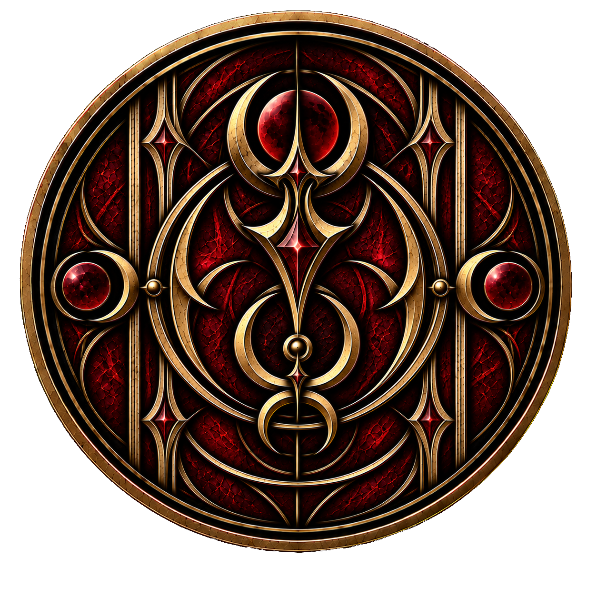

← Zum Artikel „Wesen“Weltwiki · Wesen
Vampire
Vampire sind Wesen, die in einer verborgenen Subkultur innerhalb der menschlichen Gesellschaft leben. Obwohl sie unter Menschen leben und sich äußerlich nur durch wenige Merkmale von ihnen unterscheiden, halten sie ihre Existenz konsequent geheim. Über Jahrhunderte haben sie eigene gesellschaftliche Strukturen, Traditionen und Regeln entwickelt, die sich weitgehend unabhängig von der menschlichen Welt erhalten haben.
Körper und Erscheinungsbild
Äußerlich ähneln Vampire den Menschen, besitzen jedoch einige charakteristische Merkmale. Typisch sind eine blasse Haut, überwiegend schwarze Haare und auffällig blutrote Augen. Während schwarzes Haar unter Vampiren besonders häufig vorkommt, sind auch andere natürliche Haarfarben möglich. Genetische Abweichungen können zudem weitere Unterschiede im Erscheinungsbild hervorrufen. Charakteristisch sind außerdem ihre Fangzähne. Dabei handelt es sich um die Eckzähne eines Vampirs, die sich nach eigenem Willen verlängern und zuspitzen können. Dieser Vorgang wird auch als „Aufblitzen“ der Fangzähne bezeichnet. Sie dienen ausschließlich zum Beißen und nicht unmittelbar zur Aufnahme von Blut, das gewöhnlich über Mund und Rachen getrunken wird.
Vampire sind Menschen körperlich deutlich überlegen. Sie verfügen über größere Kraft und Geschwindigkeit sowie wesentlich feinere Sinne. Insbesondere können sie auch bei sehr geringer oder fehlender Beleuchtung noch ausgesprochen gut sehen. Gerade ihre geschärfte Wahrnehmung muss jedoch trainiert werden, damit ein Vampir ihr volles Potenzial ausschöpfen und die zusätzlichen Sinneseindrücke gezielt nutzen kann.
Trotz ihrer übernatürlichen Eigenschaften sind Vampire weder unsterblich noch besonders langlebig. Ihre Lebenserwartung entspricht ungefähr der eines Menschen oder liegt nur leicht darüber. Ebenso können sie erkranken und sowohl an Krankheiten als auch an Verletzungen sterben.
Gegenüber ihrer Umgebungstemperatur sind Vampire hingegen weitgehend unempfindlich. Sie besitzen kaum ein natürliches Temperaturempfinden und können selbst starke Hitze oder Kälte ohne die für Menschen üblichen körperlichen Folgen ertragen.
Eine besondere Gefahr stellt direktes Sonnenlicht dar. Ungeschützte Vampire beginnen innerhalb kürzester Zeit zu verbrennen und können vollständig zu Asche zerfallen. Bereits gewöhnliche Kleidung kann bedeckte Körperstellen schützen. Moderne Vampire haben darüber hinaus spezielle Sonnenschutzmittel und Kontaktlinsen entwickelt, durch die sie sich auch tagsüber weitgehend normal im Freien bewegen können.
Ernährung und Blut
Vampire benötigen wie Menschen gewöhnliche Nahrung und Flüssigkeit. Zusätzlich sind sie jedoch auf Blut angewiesen. Ohne dessen regelmäßigen Konsum werden sie zunehmend schwächer und verhungern schließlich.
Blut muss nur gelegentlich aufgenommen werden, dann jedoch in größeren Mengen. Der tatsächliche Bedarf hängt vom Zustand und der körperlichen Belastung des Vampirs ab. Verletzungen oder starke körperliche Beanspruchung können den Blutbedarf deutlich erhöhen.
Die Beschaffung unterscheidet sich von Clan zu Clan. Tierblut stellt eine verbreitete Quelle dar und kann verarbeitet und längerfristig gelagert werden. Eine besondere Form ist der sogenannte Blutwein, bei dem Blut mit Alkohol vermischt und anschließend in Flaschen aufbewahrt wird. Daneben existieren unter anderem freiwillige menschliche Spender und eigene Blutvorräte oder Blutbanken. Einige Vampire beschaffen sich ihr Blut jedoch auch gewaltsam durch Überfälle auf Menschen.
Menschen können in seltenen Fällen selbst in Vampire verwandelt werden. Weitaus gewöhnlicher ist jedoch die natürliche Fortpflanzung.
Das innere Biest
Jeder Vampir trägt ein sogenanntes inneres Biest in sich. Es verkörpert den ursprünglichen, wilden und vollkommen instinktgetriebenen Teil seines Wesens. Das innere Biest kennt weder Vernunft noch langfristiges Denken; seine Bedürfnisse beschränken sich auf unmittelbare Instinkte wie Trinken, Töten und Zerstören.
Das innere Biest wird vor allem durch echtes Blut genährt. Beim Konsum von Blut kann es die Kontrolle über den Vampir übernehmen, weshalb der kontrollierte Umgang damit erlernt und trainiert werden muss. Ein Vampir, der seinem inneren Biest vollständig nachgibt, verliert Sprache und Vernunft und handelt ausschließlich nach seinen unmittelbaren Instinkten.
Gleichzeitig bildet die Kraft des inneren Biests die Grundlage für viele traditionelle vampirische Rituale. Insbesondere die Herstellung und Verwendung vampirischer Artefakte ist eng mit ihm verbunden.
Clans und Gesellschaft
Die vampirische Gesellschaft ist in Clans organisiert. Diese können sich erheblich in ihrer Größe, ihren Traditionen und ihren Lebensweisen unterscheiden. Je nach Größe eines Clans wird dieser von einer oder mehreren Anführerfamilien geführt.
Eine besondere Bedeutung innerhalb der vampirischen Gesellschaft besitzt die eigene Blutlinie. Diese entspricht in der Regel der familiären Abstammung und ist eng mit dem jeweiligen Familiennamen verbunden. Vampire definieren sich stark über ihre Herkunft und die Eigenschaften ihrer Vorfahren und tragen ihren Familiennamen entsprechend häufig mit großem Stolz.
Neben gewöhnlichen körperlichen Merkmalen können über eine Blutlinie auch besondere Talente und außergewöhnliche Begabungen weitergegeben werden. Bestimmte Fähigkeiten können dadurch über Generationen hinweg charakteristisch für einzelne Familien bleiben und deren Ruf innerhalb der vampirischen Gesellschaft prägen. Bei bekannten Blutlinien kann bereits der Familienname mit bestimmten Fähigkeiten, Traditionen oder Erwartungen verbunden sein.
Die Führungsposition einer Familie wird erblich weitergegeben. Das älteste Kind übernimmt unabhängig vom Geschlecht die Position seiner Eltern und führt den Clan später gemeinsam mit dem eigenen Ehepartner. Existieren mehrere Anführerfamilien, sind diese untereinander gleichgestellt und bilden gemeinsam eine Art Rat. Innerhalb des Clans besitzen ihre Entscheidungen höchste Autorität.
Ehen innerhalb eines Clans sind grundsätzlich erlaubt. Verbindungen zwischen Angehörigen unterschiedlicher Clans sind dagegen streng verboten. Eine Ausnahme bilden politisch arrangierte Ehen zwischen Anführerfamilien, mit denen zwei Clans miteinander verbunden oder dauerhaft vereinigt werden sollen.
Das Verhältnis verschiedener Clans untereinander ist häufig angespannt. Rivalitäten, Fehden und verdeckte Kriege können sich über Generationen oder sogar Jahrhunderte erstrecken. Diese Konflikte werden ebenso wie die Existenz der Vampire selbst vor der menschlichen Gesellschaft verborgen gehalten.
Altertümliche und moderne Vampire
Seit einigen Jahren befindet sich die vampirische Gesellschaft zunehmend im Wandel. Dabei haben sich zwei große Strömungen herausgebildet, deren Vorstellungen vom vampirischen Leben immer weiter auseinandergehen.
Altertümliche Vampire halten an den traditionellen Lebensweisen fest. Sie konsumieren echtes Blut, pflegen die Verbindung zu ihrem inneren Biest und verlassen sich auf Rituale und Artefakte. Moderne Technologien lehnen viele von ihnen ab oder betrachten sie zumindest mit großem Misstrauen.
Moderne Vampire setzen dagegen zunehmend auf Wissenschaft und Technologie. Eine ihrer bedeutendsten Entwicklungen ist synthetisches Blut. Dieses enthält alle Bestandteile, die ein Vampir zum Überleben benötigt, nährt jedoch nicht das innere Biest. Bei dauerhaftem Konsum synthetischen Blutes fällt dieses deshalb in einen tiefen Ruhezustand.
Dadurch verlieren moderne Vampire zwar den Zugang zu den Kräften, die für traditionelle Artefakte notwendig sind, werden gleichzeitig jedoch unabhängiger von ihrem inneren Biest. Technologie übernimmt für sie zunehmend die Aufgaben, für die altertümliche Vampire auf Rituale und Artefakte zurückgreifen.
Der Ruhezustand des inneren Biests ist allerdings nicht endgültig. Ein Vampir kann jederzeit wieder echtes Blut konsumieren und es dadurch erneut erwecken. Gerade für Vampire, die lange ausschließlich synthetisches Blut zu sich genommen haben, birgt dies erhebliche Gefahren: Da ihnen die Gewöhnung und Übung im Umgang mit ihrem inneren Biest fehlt, können bereits gewöhnliche Mengen echten Blutes zu einem vollständigen Kontrollverlust führen.
Der Konflikt zwischen altertümlichen und modernen Vampiren ist damit mehr als eine Auseinandersetzung zwischen Tradition und Fortschritt. Er berührt die grundlegende Frage, welchen Platz das innere Biest in der vampirischen Existenz einnehmen soll, als wesentlicher Teil ihrer Natur oder als Überbleibsel einer Vergangenheit, das durch moderne Entwicklungen nicht länger notwendig ist.